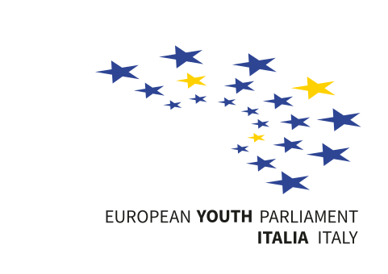
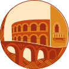
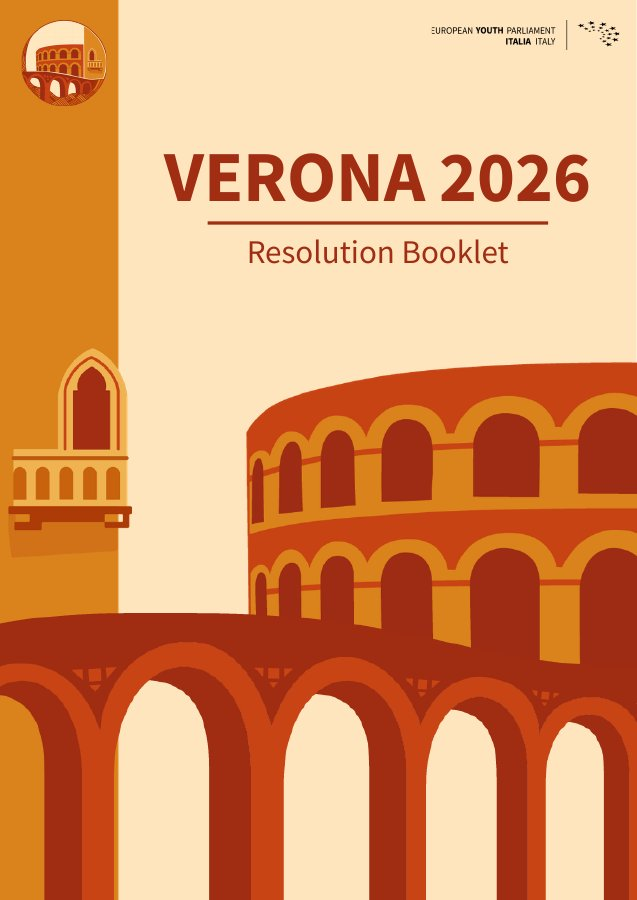

Telenuovo · TG Verona
Il “Parlamento Europeo giovani” arriva per la prima volta nelle scuole veronesi
La prima Sessione Regionale a Verona: le scuole coinvolte e un’occasione per sperimentare la partecipazione democratica.
Leggi l’articolo

RS Verona2026RS Verona 2026 · La sessione, le idee, il seguito
Weaving local traditions into Europe’s future.
Dal 22 al 25 ottobre 2026, Verona ha riunito giovani da tutta Italia e dall’Europa per quattro giorni di confronto. La sessione si è conclusa: qui restano le sue idee, le storie e le persone che l’hanno resa possibile.
Grazie a chi ha fatto parte di questa storia.
Rassegna stampa
Il racconto di RS Verona 2026 attraverso le testate che hanno dato spazio alla sessione e alla partecipazione dei giovani.
Telenuovo · TG Verona
La prima Sessione Regionale a Verona: le scuole coinvolte e un’occasione per sperimentare la partecipazione democratica.
Leggi l’articoloL’Arena
Il dialogo tra identità locali e futuro europeo, raccontato attraverso i temi e i protagonisti di RS Verona 2026.
Leggi l’articoloNella rassegna anche: Il Veronese Magazine · Radio Pico.

Le idee della sessione
Il lavoro delle otto commissioni, raccolto in un unico documento. Leggi le proposte elaborate dai delegati per l’Assemblea Generale di RS Verona 2026.
Esplora le otto commissioni →Oltre la sessione
Persone, visione e partner che hanno reso possibile la sessione.
Riscopri la sessione →La sessione è finita. Il tuo percorso può continuare: scopri i ruoli e trova il tuo prossimo passo nell’EYP.
Continua il percorso →Un unico punto di riferimento per informazioni, stampa, collaborazioni e partecipazione futura.
Restiamo in contatto →